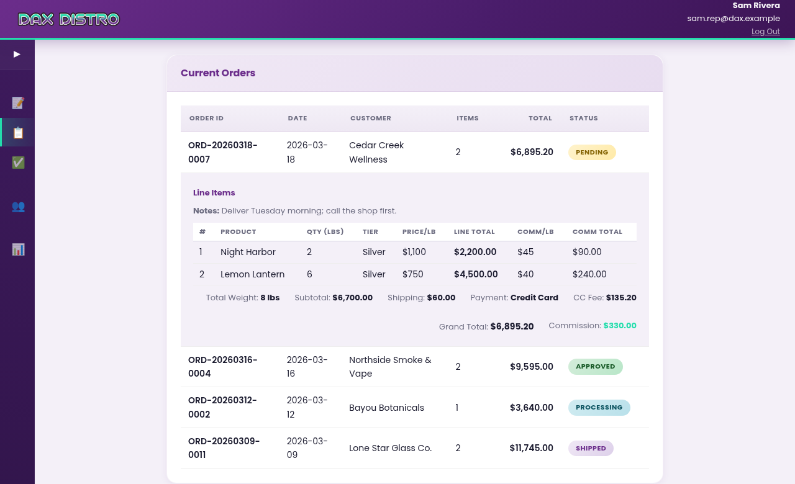
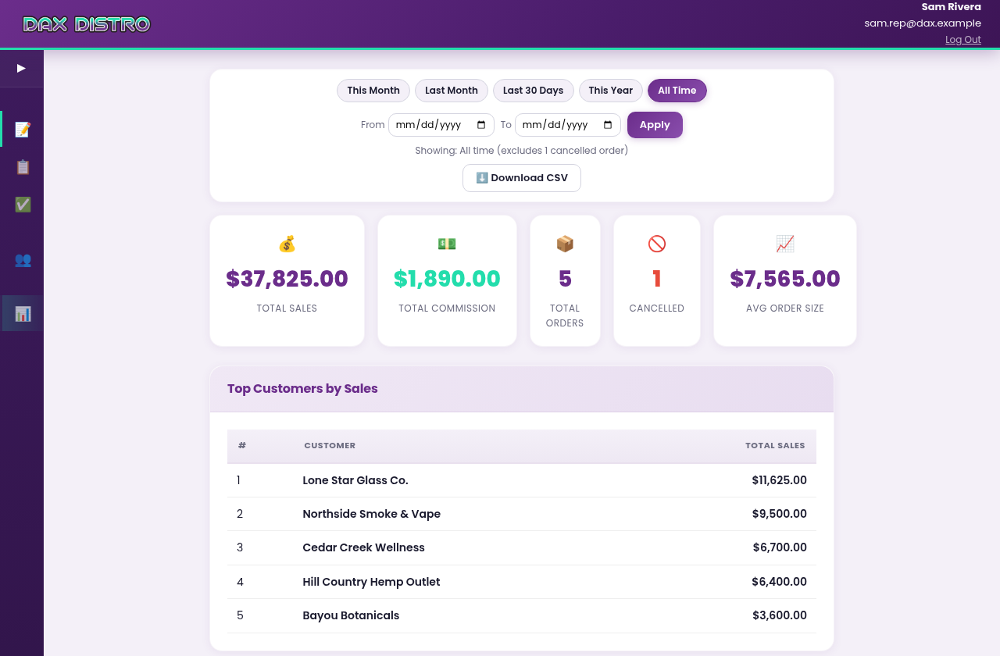

The problem
Reps in the field, orders arriving as texts and calls, the office retyping them into the wholesale system. A price sheet with five product grades and five volume tiers, where the tier came from the total weight of the order, so a rep quoting one line at a time got it wrong. Commissions worked out by hand at month end. Nobody in the field could see what was actually in stock.
What I built
A web portal with a Google sign-in limited to company accounts. A rep sees only the customers they brought in, builds an order from inventory grouped by grade with stock levels showing, and the app works out the tier from the order's total weight, prices each line, and shows the commission. Submitting writes the order to the sheet, takes the stock down, and emails the office. Admins see every order, move it through its statuses, and run inventory.
What changed
Pricing arguments ended, because the same matrix priced everyone and an override was allowed but logged. Out-of-stock product disappeared from the form instead of being sold. Reps got their own numbers on demand: sales, commission, top customers. The first version was live the day it was started. Six weeks later, after the reps had lived in it, I rewrote it on a faster stack without changing what they saw.
What the rep saw
One page, top to bottom: the customer, the lines, the money. The customer card searches the rep's own book by name, contact, or phone; a new customer is a short form with duplicate detection on phone and email, and a billing address that defaults to the shipping one. The product list is grouped by grade and shows the stock left. Here three lines add up to twelve pounds, which lands the whole order in the Gold tier, and every line is priced at Gold.
![Screenshot of the order portal's New Order page. A purple header with the Dax Distro logo and the signed-in rep's name. A Customer card shows the selected customer, Northside Smoke and Vape, with contact, phone, email, and city, plus Edit and Change buttons. An Order Items card lists three lines: Blue Meridian 4 lbs, Sugar Pine 3 lbs, Copper Haze 5 lbs, each marked Gold tier with a price per pound, commission per pound, and line total. A totals bar reads 12 lbs (Gold), order total $9,150.00, your commission $415.00.](img/dax-order.png)
Below the lines: notes, a shipping charge typed in from the carrier's estimate, and a payment method. ACH is the default; a card adds a two-percent fee to the subtotal plus shipping. Commission is figured on product only, never on shipping or fees, and the summary says so in numbers rather than in fine print.
Rules the app enforced, so nobody had to argue about them
- The tier belongs to the order, not the line. Five product grades by five weight bands. Total weight picks the band; every line is priced in it. Add a line and watch the others get cheaper.
- You can't sell what isn't there. A product with zero stock is not in the dropdown. A quantity is capped at what's on the shelf. The stock number the rep sees is at most a minute old.
- Your customers are yours. A rep sees, edits, and orders for the customers they created and no one else's. Duplicate detection by phone and email stops the same shop being entered twice under two reps.
- Overrides are allowed and remembered. A rep can click a line's tier and pick another. The order records both the tier used and the tier the app would have chosen, so the office can see every exception.
- The browser suggests, the server decides. Prices update live in the page for feel, then the server recomputes every line from the matrix on submit. A tampered page can't invent a price.
- Stock moves are a ledger. Every change to inventory, whether an order, a delivery, a correction, or a cancellation, writes a line with the previous number, the new number, who did it, and why. Cancelling an order puts its stock back and says so.
- The sensitive bits stay masked. A customer's license number and tax ID go out to the browser masked, and come back untouched unless the rep types a new one.
After submit
An order gets an ID, one row per line in the sheet, an email to the office with the full order laid out, and a place in the rep's Current Orders list. From there it walks Pending, Approved, Processing, Shipped, Completed, and only an admin can move it. A rep sees a badge; an admin sees a dropdown. Clicking a row opens the lines with the tier each one was priced at, and the totals, fees, and commission underneath.

The Reports view gives a rep the same four numbers the office would otherwise be asked for, over any date range: total sales, total commission, order count, and average order, with cancelled orders excluded and counted separately, plus a top-ten of their customers. An admin sees the same page across any rep or all of them, and can download the commission run as a spreadsheet.

Where the data lived
The office already ran on one Google Sheet, so the portal used that sheet as its database instead of replacing it. Customers, orders, inventory, the stock ledger, the rep roster, and the form settings are each a tab. The office kept working in the spreadsheet they knew, and the portal put rules in front of it. Around that core sat the connections a distributor actually needs: the website's stock, the accounting system, the product photos, and a nightly backup.
Left to right: the rep, the rules, the spreadsheet, and everything the spreadsheet had to stay in step with. The sheet is the one thing in the picture the office could open and read without me.
The admin side
Admins got an Inventory page the reps never saw: receive a delivery, correct a count with a required note, edit a product, and read the ledger of every change underneath. Adding a product did more than add a row. It created the product page on the company website, pulled the product's photo from a Drive folder and attached it, and asked an n8n workflow to write the description.
The photo side was borrowed. Dax was a spin-off of Elevated, and I had already built the photo editor there, so its Drive folders and its cleaned-up photos were the raw material this portal reached for. What Dax gave back was the other half of the loop. Wiring this portal into WordPress and WooCommerce, stock both ways and a product page per new product, showed me the photo editor could go a lot further than a folder of finished images. When I went back to Elevated, I took that WooCommerce work with me and closed the loop there: the photo editor and the Live Ref sheet now feed the Elevated site and build every product page themselves.

Two builds in six weeks
The first version was a Google Apps Script web app: one HTML file and one script, embedded in the company's WordPress site, live the same day it was started. Sign-in was email plus a PIN, because Google's own sign-in misbehaved inside that sandbox when a rep had two Google accounts in the browser. It worked, and the reps used it for two weeks. Its one real flaw was the platform: Apps Script wakes up cold, and a rep tapping the link on a phone waited five to fifteen seconds for the page.
So I rewrote the backend in PHP on the same host as the company website. The two dozen script functions became service classes behind a small API, the page's calls became ordinary fetches, sessions became signed tokens, sign-in became Google's, restricted to company accounts, and a memory cache kept the common reads under two hundred milliseconds. The page the reps saw did not change. The old version stayed deployed for a month in case of rollback, and was never needed.
Where it stands
Dax Distro wound down in July 2026 and the portal was retired with it. The code, the docs, and the runbooks are archived. Everything on this page comes from a copy of the portal running on my own machine against made-up customers, made-up products, made-up prices, and made-up orders. No real rep, customer, or price appears here.
The reps had a second tool from the same period: a lead-tracking app on their phones, backed by another Google Sheet.
Stack
A spreadsheet as the database is a choice people apologize for. Here it was the point: the office could read it, fix it, and back it up without a developer, and the portal's job was to keep it honest.
Built in conversation
Same method as everything on this site. The pricing engine, the rep-scoping, the two-way stock sync, and the PHP rewrite all came out of dialogue with Claude, one feature at a time, each one tested with the reps before the next. The rewrite from Apps Script to PHP took days rather than weeks because the first version was already the specification.